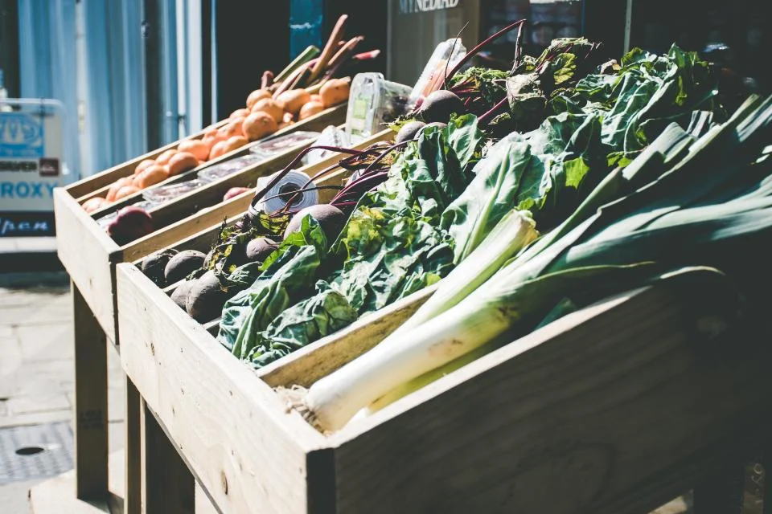
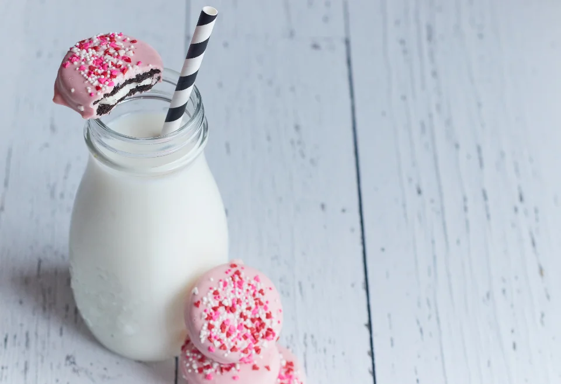
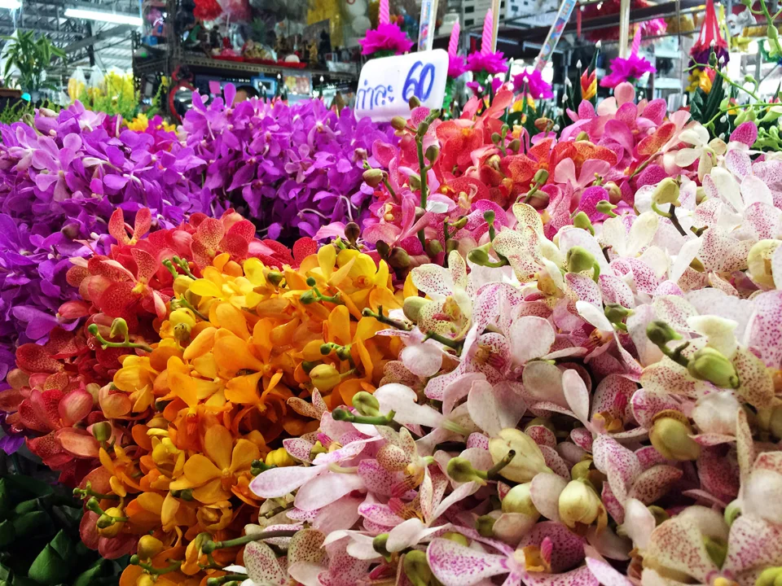

Täglich frisch
Obst & Gemüse
Jeden Morgen frisch angeliefert, mit saisonaler Ware von Höfen aus der Umgebung und exotischen Früchten aus fairem Handel.
Sortiment
Rund 12.000 Artikel auf 1.800 Quadratmetern: Wir setzen auf Produkte von Erzeugern aus der Umgebung und ergänzen sie um Klassiker und Spezialitäten aus aller Welt.

Täglich frisch
Jeden Morgen frisch angeliefert, mit saisonaler Ware von Höfen aus der Umgebung und exotischen Früchten aus fairem Handel.

Aus dem eigenen Ofen
Brötchen ab 7 Uhr, Brot nach traditionellen Rezepten und Kuchen am Wochenende – mehrmals täglich frisch gebacken.

Mit Beratung
Über 120 Käsesorten, Wurst vom Metzger aus dem Nachbarort und frischer Fisch dienstags und freitags – auf Wunsch frisch aufgeschnitten.

Gut gekühlt
Milch aus der Region in der Pfandflasche, Joghurt, Eier von Freilandhöfen und eine große Auswahl pflanzlicher Alternativen.

Getränkemarkt
Wasser und Säfte in Kisten, Weine von Winzern aus Deutschland und Europa sowie Bier aus regionalen Brauereien.

Für zu Hause
Schnittblumen und Topfpflanzen der Saison, dazu Drogerie, Reinigung und Babybedarf für den kompletten Einkauf.
Unser Versprechen
Ist ein Produkt nicht so frisch, wie es sein sollte, tauschen wir es ohne Diskussion um oder erstatten den Kaufpreis.
Mehr als 85 Erzeuger aus der Region liefern direkt an uns. Das spart Transportwege und schmeckt man.
Jede Woche neue Angebote und dauerhaft günstige Eigenmarken – Qualität muss nicht teuer sein.
Service
Sag uns Bescheid – Produktwünsche nehmen wir gern ins Sortiment auf.
Produkt wünschen